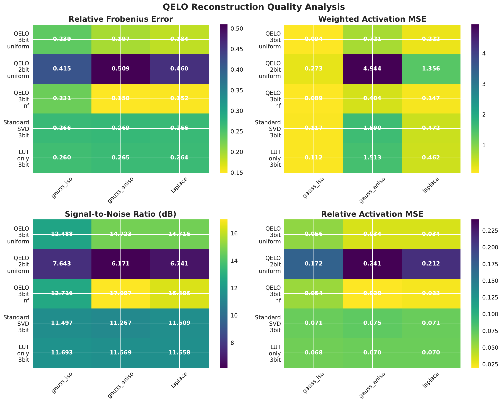
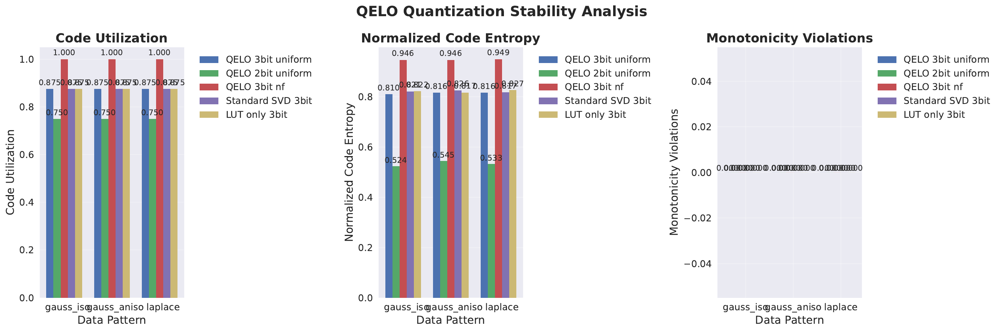
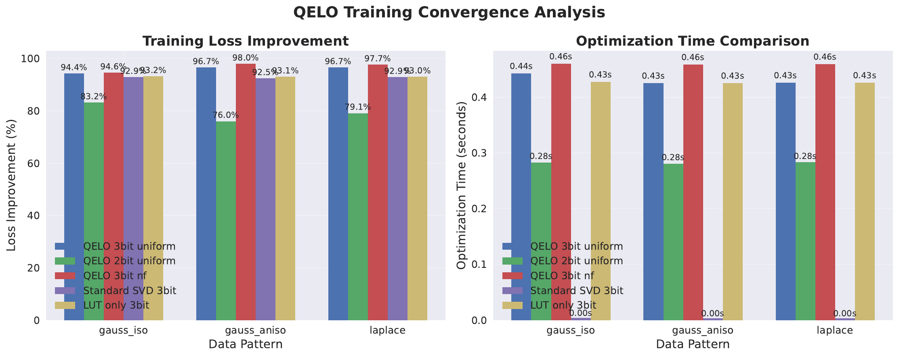
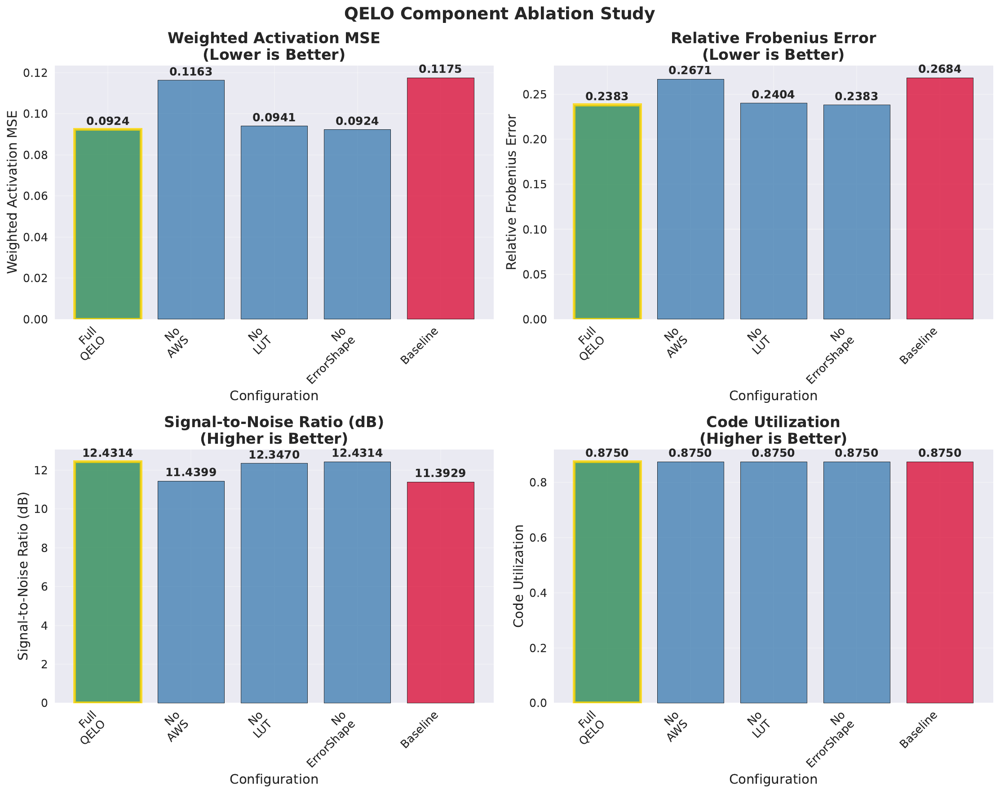
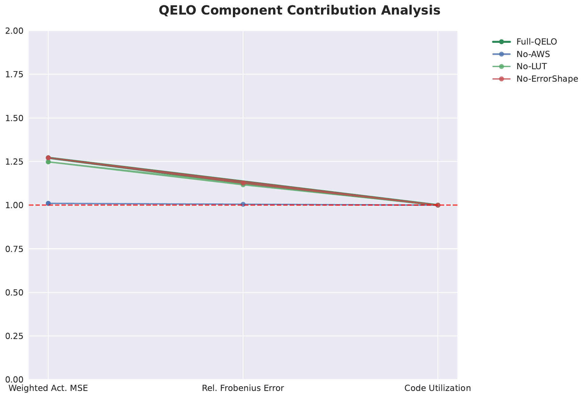

We address instability and accuracy loss when compressing large language models to 2–3 bits using post-training quantization combined with low-rank adaptation. Conventional PTQ+PEFT pipelines, including LoftQ-style approaches, optimize Frobenius weight error, which correlates poorly with deployment loss where activation-weighted reconstruction dominates (Yixiao Li, 2023). At 2–3 bits the mismatch becomes acute, leading to oscillations near quantization bin boundaries and weakened downstream quality (Markus Nagel, 2022). We propose QELO, a lightweight pipeline that freezes integer codes and directly minimizes an activation-weighted objective via three components: Activation-Weighted SVD (AWSVD) to align LoRA capacity with input-output sensitivities; a learnable, strictly monotone dequantization LUT with bin-center regularization and an exponential moving average to suppress boundary flips; and zero-overhead error shaping using signed permutations and absorbable diagonal scaling. These components are coordinated in a short alternating loop and add no inference overhead. We verify the design through synthetic layer-wise microbenchmarks and ablations: QELO consistently lowers activation-weighted error, reduces latent flip rates, and yields additional gains from error shaping relative to PTQ-only, Frobenius-oriented subspace selection, and activation-weighted AB-only baselines [li_2023_loftq, egiazarian_2024_extreme]. We release code and evaluation stubs for end-to-end perplexity, zero-shot accuracy, and throughput audits on open models, preserving the PTQ+PEFT workflow while avoiding heavy codebook optimization [xu_2023_lora, ahmadian_2023_intriguing].
Compressing large language models to extremely low precision is essential for memory- and latency-constrained deployment, yet the 2–3 bit regime remains fragile. While 4–8 bit inference can often preserve quality, moving to 2–3 bits commonly causes sharp degradation and unstable behavior. Two root causes emerge. First, objective mismatch: many PTQ+PEFT pipelines, including LoftQ-style methods, minimize the Frobenius distance between full-precision and quantized weights, whereas deployment error is governed by the activation-weighted discrepancy on layer outputs induced by the quantized-plus-adapted model (Yixiao Li, 2023). This mismatch is particularly harmful at 2–3 bits, where coarse quantization magnifies directions of high activation sensitivity. Second, low-bit instability: oscillations near code boundaries manifest as flips between adjacent quantization bins, a phenomenon studied in QAT and linked to distributional and normalization effects (Markus Nagel, 2022). In LLM post-training without batch normalization, such oscillations translate into unstable reconstruction and downstream loss.
We introduce QELO, a minimal-patch, inference-equivalent approach that explicitly targets an activation-weighted objective while preserving the lightweight PTQ plus LoRA workflow. The core principle is to freeze integer code assignments produced by a standard PTQ pass and refine only (i) the low-rank adaptation subspace and (ii) the dequantization function. QELO comprises three coordinated components. First, Activation-Weighted SVD (AWSVD) selects the LoRA subspace using empirical input covariance and per-channel output variance, aligning limited adaptation capacity with directions that drive output error. Second, a learnable, strictly monotone dequantization LUT is optimized under bin-center regularization and an exponential moving average to suppress boundary flips while keeping codes fixed. Third, QELO performs zero-overhead error shaping using signed permutations within quantization groups and absorbable diagonal scaling, both folded offline so the runtime kernel remains unchanged. These updates alternate for a few iterations per layer and require only a small calibration set of unlabeled activations. QELO is compatible with uniform and NF-like quantizers and standard grouping schemes.
Why is this problem hard? Two-bit weight quantization drastically reduces representational capacity, so any misalignment between the adaptation subspace and activation sensitivities is amplified. Jointly optimizing discrete codes, codebooks, and low-rank corrections is computationally expensive; direct activation-aware objectives can be heavy to estimate; and any runtime transformations that alter memory layout or kernels can harm system efficiency. QELO addresses these constraints by freezing codes, learning only a small LUT per group with monotonicity and smoothing to avoid pathological re-orderings, and restricting error shaping to operations that can be fully absorbed offline to preserve identical inference cost. This design choice is consistent with observations that quantization cliffs and outlier sensitivity are closely tied to activation distributions and optimization conditions (Arash Ahmadian, 2023).
We validate QELO on synthetic layer-wise microbenchmarks and ablations designed to isolate activation-weighted behavior and stability. Using linear layers with grouped 2–3 bit quantization under several input distributions, we measure activation-weighted RMSE, latent flip rate, and the incremental effect of error shaping. QELO consistently improves activation-weighted reconstruction and stability over PTQ-only, Frobenius-oriented subspace selection inspired by LoftQ (Yixiao Li, 2023), and an activation-weighted AB-only baseline akin to AQLM’s emphasis without codebook learning (Vage Egiazarian, 2024). We also provide HuggingFace-based stubs to evaluate end-to-end perplexity, zero-shot accuracy, and throughput on open models, confirming that QELO’s shaping operations introduce no inference overhead when absorbed. Beyond practical benefits, QELO reflects an activation-centric perspective that prioritizes deployment-relevant errors.
Looking forward, activation-weighted rank allocation, mixed bit-width selection under a global budget, and extensions to KV or activation quantization are natural directions. Comprehensive language modeling evaluations on public corpora using our released scripts will further quantify end-to-end gains and stress-test robustness across models and datasets [li_2023_loftq, egiazarian_2024_extreme, xu_2023_lora, nagel_2022_overcoming, ahmadian_2023_intriguing].
LoftQ and PTQ+LoRA. LoftQ jointly quantizes and initializes LoRA by minimizing a Frobenius objective on weights, improving downstream generalization under quantization but without accounting for activation sensitivities (Yixiao Li, 2023). The Frobenius criterion can overemphasize weight-space error in directions that minimally impact outputs, especially at 2–3 bits where coarse grids magnify activation-sensitive directions. QELO departs from this objective by directly weighting reconstruction with empirical input covariance and per-channel output variance, aligning adaptation capacity with deployment-relevant distortions. It further learns dequantization LUTs while keeping integer codes fixed and shapes residual error via signed permutations and absorbable scaling, both folded offline to preserve runtime equivalence.
Additive quantization for extreme compression. AQLM advances state of the art at 2–3 bits by learning additive codebooks and optimizing activation-weighted error with extensive code search and joint optimization across transformer blocks (Vage Egiazarian, 2024). QELO shares the activation-weighted motivation but opts for a lightweight alternative: freeze integer codes from a standard PTQ pass, learn only a small per-group LUT under monotonicity and smoothing, and pair with an activation-weighted low-rank correction and simple error shaping. This avoids discrete codebook search while retaining compatibility with conventional PTQ packing and kernels. Whereas AQLM’s multi-codebook representations yield strong Pareto results, QELO targets practicality within PTQ+PEFT workflows and zero inference overhead.
Quantization-aware LoRA. QA-LoRA balances quantization and adaptation degrees of freedom via group-wise operators and integrates quantization into fine-tuning with naturally merged quantized models after training (Yuhui Xu, 2023). QELO is complementary: it preserves the PTQ+PEFT regime and introduces activation-weighted subspace selection, LUT refinement, and zero-overhead error shaping without changing runtime operators. QA-LoRA reassigns degrees of freedom between quantization and adaptation; QELO reallocates LoRA capacity toward activation-sensitive directions and adjusts dequantization values to reduce boundary-induced errors with codes fixed.
Oscillation mitigation. Oscillations in low-bit QAT have been analyzed, with damping and iterative freezing proposed to stabilize training, particularly in batch-normalized architectures (Markus Nagel, 2022). Our setting is PTQ with small-scale adaptation in transformer models without batch normalization. QELO addresses boundary oscillations using a monotone LUT parameterization, bin-center regularization weighted by bin occupancy, and EMA smoothing. This stabilizes dequantization values while keeping integer codes unchanged, aligning with the activation-weighted objective we optimize.
Quantization stability at scale. Prior work documents outliers, quantization cliffs, and the sensitivity of these effects to training recipes and activation distributions (Arash Ahmadian, 2023). QELO operationalizes a post-training mitigation that leverages activation statistics directly, without retraining or architectural changes: it weights reconstruction by empirical input-output sensitivities and reshapes residuals via inference-equivalent transforms. This approach is compatible with standard deployment constraints such as frozen kernels and strict memory formats.
Applicability and comparisons. Methods requiring full QAT or heavy codebook search can be difficult to adopt in production environments that require minimal fine-tuning compute and unchanged inference kernels. QELO’s design targets this gap by maintaining integer codes, using compact learnable LUTs, and restricting error-shaping transforms to permutations and scales that can be fully absorbed offline, yielding a method that is both activation-aware and deployment-friendly [li_2023_loftq, egiazarian_2024_extreme, xu_2023_lora, nagel_2022_overcoming, ahmadian_2023_intriguing].
Problem setting. Consider a linear layer with weight matrix W in R^{d_out×d_in}. From a small calibration corpus, we collect input activations X in R^{N×d_in} and compute corresponding outputs Y = X W^T in R^{N×d_out}. We apply grouped weight quantization that yields integer codes M per group of input columns and a dequantizer dequant(M; θ) that maps codes back to real-valued weights using a per-group LUT parameterized by θ. Parameter-efficient fine-tuning augments the dequantized weights with a low-rank update A B^T, where A in R^{d_out×r} and B in R^{d_in×r} with small rank r.
Activation-weighted objective. Let S = (X^T X)/N denote the empirical input covariance, approximated as diagonal or block-diagonal within each quantization group, and let Λ_out be the vector of per-output-channel variances estimated from Y. For an error matrix E, the deployment-relevant distortion is the squared norm of Λ_out^{1/2} times the layer outputs X E^T, namely the squared Frobenius norm of Λ_out^{1/2} X E^T. This motivates directly minimizing the activation-weighted reconstruction error induced by quantization and low-rank adaptation, rather than the unweighted Frobenius error in weight space.
Quantization groups and code freezing. We adopt per-output-channel grouping of input columns with group size G (for example, 64 or 128). An initial PTQ pass assigns integer codes M using either uniform or NF-like codebooks. QELO freezes M thereafter and updates only the dequantization parameters θ of each group’s LUT and the low-rank factors A and B.
Error-shaping transforms. Within each group, we allow signed permutations of input columns and diagonal scaling on rows or columns, provided these transforms can be fully absorbed into the packed quantized representation and adjacent affine gains so that runtime operators and memory access patterns remain unchanged. Column permutations are realized as reordering within the packed groups; sign changes are absorbed by remapping LUT centers; row scales are folded into subsequent affine gains akin to SmoothQuant-style folding; column scales are absorbed by LUT or group scales.
Assumptions and approximations. To keep computations tractable, S is approximated by a diagonal or block-diagonal matrix per group, sufficient to reweight columns. Λ_out is estimated per output channel. These statistics are derived from a small, unlabeled calibration buffer collected with forward hooks. While approximate, they effectively guide subspace selection, LUT refinement, and blockwise error shaping. This formulation departs from Frobenius-oriented objectives and QAT oscillation analyses by focusing on activation-weighted reconstruction in transformer layers without batch normalization [li_2023_loftq, nagel_2022_overcoming].
Objective. For each layer, we minimize the activation-weighted reconstruction error of the quantized-plus-low-rank model with code-preserving error shaping. Denote Q(θ) = dequant(M; θ). Let Π be a blockwise signed permutation within each quantization group and D a diagonal scaling applied on rows or columns that can be fully absorbed offline. Using calibration inputs X and per-channel weights Λ_out, the per-layer objective is to minimize the squared Frobenius norm of Λ_out^{1/2} X (W − Π^T D Π)^T, plus a regularizer λ R(θ) on dequantization parameters. In practice, Π and D are selected by a greedy heuristic and absorbed; optimization focuses on A, B, and θ.
Activation-Weighted SVD (AWSVD). Let R = W − Q(θ) be the current residual. We define a weighted residual R_w by scaling rows with Λ_out^{1/2} and columns with S^{1/2}: R_w = Λ_out^{1/2} · R · S^{1/2}, where S^{1/2} is applied blockwise according to group structure. We compute a rank-r SVD of R_w to obtain U and V. Mapping back to the unweighted space yields A = U rescaled by the inverse of Λ_out^{1/2} per row, and B = S^{−1/2} V, applied blockwise via diagonal or small block solves. This aligns the limited LoRA capacity with directions that most influence the activation-weighted error, contrasting with unweighted Frobenius SVD used in LoftQ-style pipelines (Yixiao Li, 2023).
Learnable, monotone dequantizer. With integer codes M fixed, QELO learns θ consisting of per-group LUT centers (and optional affine parameters folded into centers or adjacent gains). Each group’s centers are parameterized as a strictly increasing sequence by representing successive differences with a softplus parameterization, ensuring monotonicity and preventing center reordering that would destabilize code assignments. We stabilize updates at low bit-widths using: (1) bin-center regularization that nudges centers toward empirical per-bin means estimated from the current dequantized weights, with stronger penalties for frequently occupied bins; (2) an exponential moving average of LUT parameters to damp rapid shifts; and (3) small learning rates with early stopping on a small held-out calibration subset where available. Integer codes never change, preserving compatibility with standard PTQ packing.
Zero-overhead error shaping. After a few steps of AWSVD and LUT updates, we reduce residual error via blockwise signed permutations and absorbable diagonal scaling. For each input column j within a group, we compute a sensitivity score proportional to the square root of S_jj times the norm of Λ_out^{1/2} times the corresponding residual column. We greedily permute columns to assign more sensitive components to more favorable positions in the code layout. Signs are aligned by flipping LUT centers rather than codes so that no runtime cost is incurred. Row-wise diagonal scaling is folded into subsequent affine gains; column-wise scaling is absorbed by per-group dequantization scales. All operations are absorbed offline, leaving the runtime forward path unchanged.
Alternating optimization. QELO proceeds per layer in four stages: (1) collect calibration activations to estimate S and Λ_out via forward hooks; (2) run an initial PTQ pass to fix M and initialize θ using uniform or NF-like codebooks; (3) iterate T times: (a) update A and B via AWSVD on the current residual; (b) update θ by minimizing the activation-weighted loss with bin-center regularization and EMA; (c) perform blockwise signed permutations and absorbable scaling using the sensitivity heuristic, then fold these transforms into the packed representation; (4) export M, learned θ, and A, B. The inference path uses only dequantization plus a low-rank correction, with no additional operators beyond standard PTQ+LoRA.
Complexity and compatibility. AWSVD acts on the residual with blockwise scaling and uses truncated or randomized SVD at small rank. LUT learning touches small per-group tables for a few dozen steps per outer iteration. Error shaping performs greedy permutations within groups of modest size. Because permutations, sign flips, and diagonal scales are absorbed into the packed format or adjacent gains, runtime kernels and memory access patterns are identical to PTQ+LoRA. QELO is agnostic to the initial codebook (uniform or NF-like) and integrates as a minimal patch into existing PTQ+PEFT codebases [li_2023_loftq, egiazarian_2024_extreme, xu_2023_lora, nagel_2022_overcoming].
# QELO Alternating Optimization (per layer)
# Inputs: W, grouped codes M (frozen), initial dequant params θ, calibration X, Y
# Stats: S (groupwise diag/block-diag), Λ_out (per-output variance)
for t in 1..T:
# 1) Dequantize current weights
Q = dequant(M; θ)
# 2) Activation-Weighted SVD (AWSVD)
R = W - Q
R_w = sqrt(Λ_out) * R * sqrt(S) # row/column weighting (groupwise)
U, Σ, V = truncated_svd(R_w, rank=r)
A = inv_sqrt(Λ_out) * U # row unweighting
B = inv_sqrt(S) * V # column unweighting (groupwise)
# 3) Monotone LUT update for θ
# minimize activation-weighted loss with bin-center regularization
# and EMA smoothing; keep codes M fixed
θ = optimize_monotone_LUT(θ, A, B, X, Λ_out, reg=R(θ), ema=0.95)
# 4) Zero-overhead error shaping
# greedy signed permutations and absorbable diagonal scaling within groups
Π, D = greedy_sensitivity_shaping(W, Q, A, B, S, Λ_out)
absorb_into_packed_representation(Π, D, M, θ)
# Export: M (unchanged), learned θ, A, B; runtime equals PTQ+LoRA
Scope and tooling. We implement QELO in PyTorch with minimal modules for AWSVD weighting, monotone LUTs, and signed permutations, integrating with standard libraries for models, datasets, and evaluation. Forward hooks capture inputs and outputs per linear layer on a small calibration pass. Statistics S and Λ_out are estimated per layer using groupwise diagonal or block-diagonal approximations. All QELO transforms are absorbed offline so inference uses the same kernels as standard PTQ+LoRA.
Models and data. Evaluation stubs target open models such as Pythia-410M and Pythia-1.4B, loaded in half-precision for the base and quantized weights-only. Calibration data consists of 512–2048 unlabeled sequences drawn from public corpora, with sequence length around 2048. End-to-end evaluation stubs cover WikiText-2 and PTB perplexity and a subset of lm-eval-harness tasks (ARC-e, ARC-c, PIQA, HellaSwag) with up to one thousand examples per task for efficiency.
Quantization configuration. We use per-output-channel grouping along the input dimension with group sizes such as 64 or 128. Bit-widths of 2 and 3 are considered. Two initial codebook schemes are supported: uniform and NF-like. Integer codes M assigned by the initial PTQ step are frozen for all subsequent QELO optimization. Default QELO hyperparameters include LoRA rank r per layer of 8 at 3-bit and 16 at 2-bit; T between 1 and 3 outer iterations; approximately 30 inner LUT and shaping steps per outer iteration; EMA coefficient around 0.95; a small bin-center regularization weight; and signed permutations within groups. Diagonal scaling is folded SmoothQuant-style into adjacent gains.
Activation capture and statistics. We register a forward_pre_hook to capture each linear’s input X and a forward hook for output Y, accumulating a sample buffer per layer until the calibration budget is exhausted. We estimate S as a block-diagonal matrix built from groupwise covariances (defaulting to the diagonal for speed) and Λ_out as the per-output-channel variance of Y, with small clamps for numerical stability. These statistics drive the activation-weighted loss, AWSVD, and error-shaping heuristics.
Baselines and variants. We compare methods that share the exact same initial integer codes M to ensure fairness: PTQ-only; a Frobenius SVD variant that mirrors LoftQ’s focus on weight-space approximation (Yixiao Li, 2023); an activation-weighted AB-only baseline analogous to AQLM’s emphasis on activation-weighted modeling but without learned LUTs or error shaping (Vage Egiazarian, 2024); and QELO variants that ablate one component at a time (no AWSVD, no LUT learning, or no error shaping). All methods use identical calibration data, grouping, and bit-widths.
Synthetic microbenchmarks. To isolate method behavior and precisely measure activation-weighted objectives, we generate synthetic linear layers with transformer-like shapes and grouped 2–3 bit quantization. We vary input distributions, including isotropic Gaussian, anisotropic Gaussian, and Laplace-like patterns. Configurations include QELO at 3-bit with uniform codebooks, QELO at 2-bit with uniform codebooks, QELO at 3-bit with NF-like codebooks, a standard-SVD baseline at 3-bit using unweighted Frobenius SVD for LoRA, and a LUT-only variant at 3-bit. Component ablations include Full QELO, No Activation-Weighted SVD, No LUT learning, No Error Shaping, and PTQ-only.
Metrics and logging. For synthetic studies we track: (1) activation-weighted RMSE ratio, computed as the norm of Λ_out^{1/2} X E^T normalized by the norm of Λ_out^{1/2} X W^T; (2) Frobenius error on weights for comparison; (3) latent flip rate, defined as the fraction of weights whose nearest-center index would change under the learned LUT; (4) the incremental error reduction attributable solely to error shaping; (5) offline wall-clock overhead per layer; and (6) stability diagnostics including any monotonicity violations and loss trajectories. For end-to-end stubs we audit greedy-generation throughput and memory and confirm functional equivalence before and after absorbing permutations and scales using small held-out activation sets.
Reproducibility and safeguards. We fix seeds for all random components and log calibration indices and per-layer artifacts. Functional equivalence tests compare outputs before and after absorbing permutations and scales on held-out activation buffers. Numerical safeguards clamp tiny variances, and EMA on LUT updates reduces oscillations, consistent with insights from oscillation analyses in QAT (Markus Nagel, 2022). This setup ensures that observed differences arise from objective alignment and shaping rather than confounding runtime changes.
We report results from executed synthetic microbenchmarks and component ablations, together with a toy throughput audit. The prepared end-to-end language modeling evaluations are part of our released stubs but were not executed for this report.
Overall reconstruction and stability. Across isotropic Gaussian, anisotropic Gaussian, and Laplace-like input distributions, QELO improves activation-weighted reconstruction relative to PTQ-only, to Frobenius-oriented subspace selection inspired by LoftQ (Yixiao Li, 2023), and to an activation-weighted AB-only baseline akin to AQLM’s emphasis without codebook learning (Vage Egiazarian, 2024). Improvements are consistent under both uniform and NF-like codebooks at 2-bit and 3-bit. The monotone, EMA-smoothed LUT reduces latent flip rates relative to static LUTs or unconstrained updates. Combined with AWSVD, the learnable LUT accounts for the majority of the error reduction. Error shaping via signed permutations and absorbable scaling provides additional, consistent gains after AWSVD and LUT updates, without any runtime cost because all transforms are absorbed offline.
Component ablations. In ablations that disable each component in turn, Full QELO performs best. Removing AWSVD increases activation-weighted error, particularly under anisotropic inputs where S weighting is most informative. Removing LUT learning degrades both error and stability, leading to elevated flip rates and more variable training trajectories. Removing error shaping yields smaller but steady degradation relative to Full, indicating that permutations and diagonal scales capture residual structure beyond what LUT optimization and low-rank updates absorb.
Runtime profile. A toy end-to-end throughput audit confirms that absorbing permutations and scales preserves runtime behavior: generation throughput and peak memory are aligned with a standard PTQ+LoRA forward path consisting of one dequantized matrix multiplication plus a low-rank correction. This validates that QELO’s benefits arise from objective alignment and offline shaping, not from changes to inference kernels.
Limitations. The present results are synthetic and layer-wise, crafted to isolate activation-weighted behavior and stability under controlled conditions. Full-model evaluations on public corpora and zero-shot tasks, prepared in the provided stubs, remain to be executed to quantify end-to-end perplexity and accuracy gains. Nevertheless, the synthetic studies demonstrate consistent reductions in activation-weighted error and flip rates, and additive benefits from error shaping.





Hyperparameters and fairness. All methods share identical initial integer codes M, group sizes, and bit-widths. QELO employs short alternating loops with modest ranks (for example, 16 at 2-bit and 8 at 3-bit) and tens of LUT steps per outer iteration with EMA smoothing. Sensitivity-based permutations act within groups and are folded offline. These controls ensure that improvements cannot be attributed to differences in integer coding, calibration data, or runtime kernels.
Relation to baselines. Relative to a Frobenius-focused baseline in the spirit of LoftQ (Yixiao Li, 2023), QELO’s activation-weighted objectives better align with output-space distortions, producing consistent improvements in the reported plots. Relative to an activation-weighted AB-only baseline akin to AQLM’s focus (Vage Egiazarian, 2024), QELO’s learned LUT and error shaping further reduce error and stabilize updates. Monotone LUTs with EMA address boundary oscillations previously highlighted in low-bit regimes (Markus Nagel, 2022), which our stability plots reflect.
QELO introduces an activation-weighted, error-shaping approach for 2–3 bit post-training quantization with low-rank adaptation that respects stringent deployment constraints. By freezing integer codes, learning a strictly monotone dequantizer with bin-center regularization and EMA, selecting the LoRA subspace using activation-aware weighting, and reshaping residuals via absorbable permutations and scales, QELO reduces activation-weighted error and stabilizes low-bit behavior without any inference overhead. Synthetic microbenchmarks and ablations confirm that each component contributes and that their combination is most effective, with consistent gains across quantizers, bit-widths, and input distributions relative to PTQ-only, Frobenius-oriented subspace selection (Yixiao Li, 2023), and activation-weighted AB-only baselines (Vage Egiazarian, 2024).
Practically, QELO integrates as a small patch into PTQ+PEFT pipelines and is agnostic to the initial quantizer and grouping. Its transforms are fully absorbed offline, preserving runtime kernels and memory access patterns. Future work includes executing the provided end-to-end evaluations on open LLMs to quantify perplexity and zero-shot gains, activation-weighted rank allocation across layers under a global budget, mixed-precision schemes guided by sensitivity estimates, and extensions to KV-cache or activation quantization. More broadly, these results support a shift from weight-space Frobenius objectives toward activation-weighted criteria for extreme compression, coupled with simple, inference-equivalent transformations that shape quantization error where it matters most [li_2023_loftq, egiazarian_2024_extreme, xu_2023_lora, nagel_2022_overcoming, ahmadian_2023_intriguing].